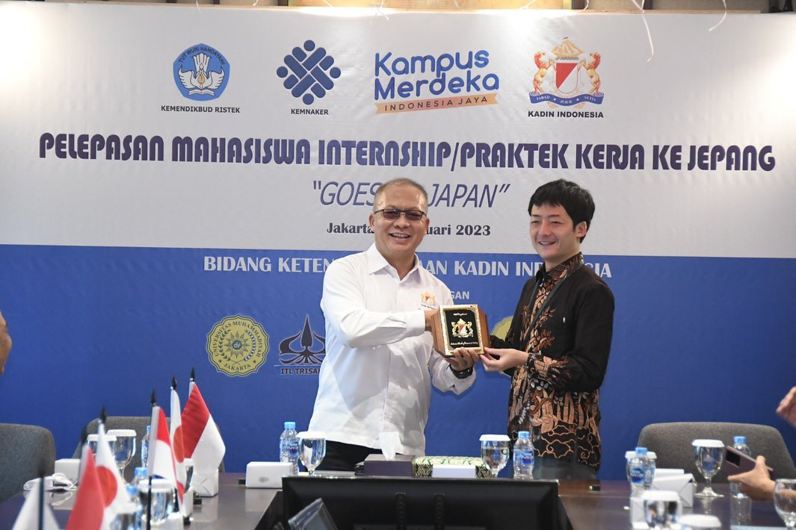
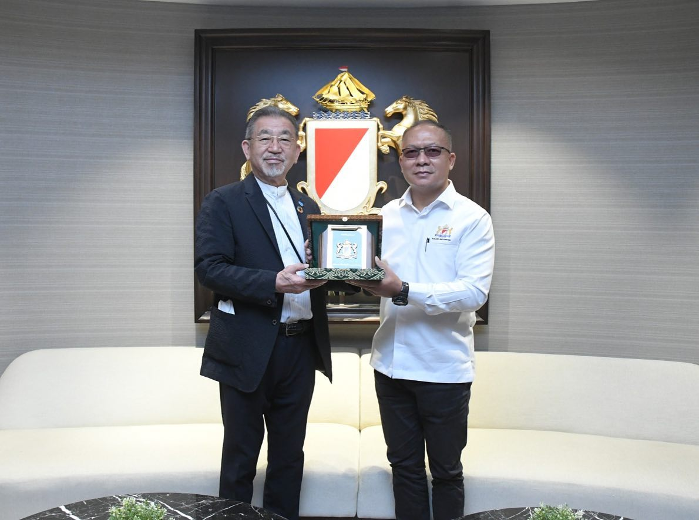
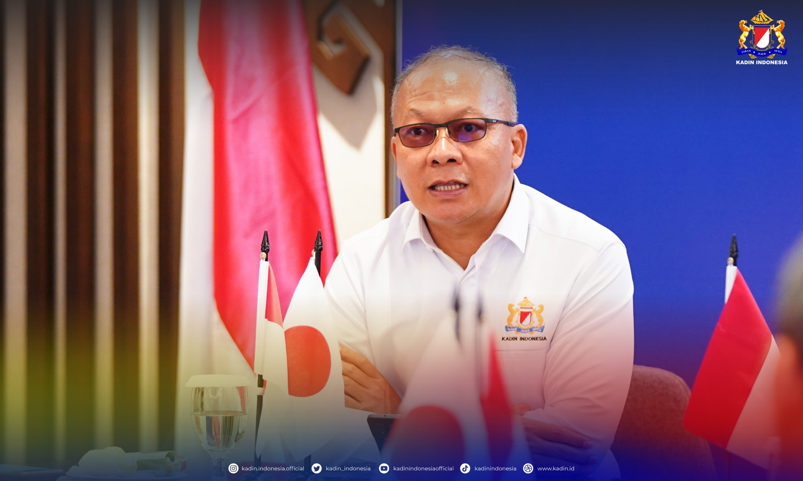
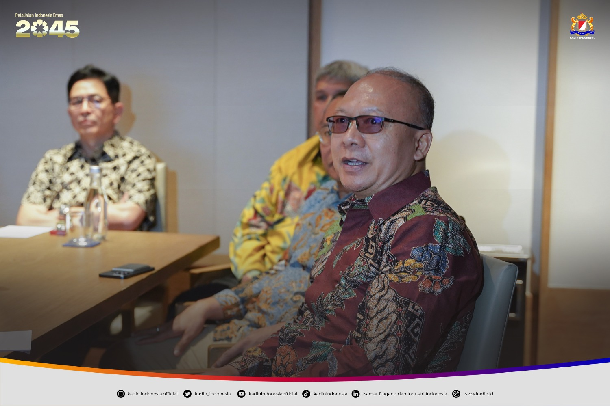

Adi Mahfudz Wuhadji
ARSIP BERITA


Dukungan Program Vokasi Industri Nasional
JAKARTA - KADIN memperkuat kompetensi tenaga kerja melalui skema sertifikasi dan pelatihan berbasis industri...
Peningkatan Sertifikasi Kompetensi SDM di Daerah
JAKARTA - Kolaborasi dengan pemerintah daerah dan institusi pendidikan mendorong percepatan sertifikasi pekerja...
Penandatanganan MoU Pendidikan Vokasi
JAKARTA - Kerja sama baru digagas antara industri dan kampus untuk meningkatkan link and match dunia usaha...
Ekspansi Program Sertifikasi Profesi
JAKARTA - Program sertifikasi profesi diperluas hingga 14 provinsi demi meningkatkan daya saing tenaga kerja...
Kunjungan Kerja Ke Industri Manufaktur
JAKARTA - Diskusi mendalam terkait kebutuhan tenaga kerja tersertifikasi dan peluang mentoring industri...
Komitmen Pengembangan SDM Berbasis Teknologi
JAKARTA - Digitalisasi pelatihan dan sertifikasi menjadi fokus utama bagi peningkatan kualitas SDM Indonesia...